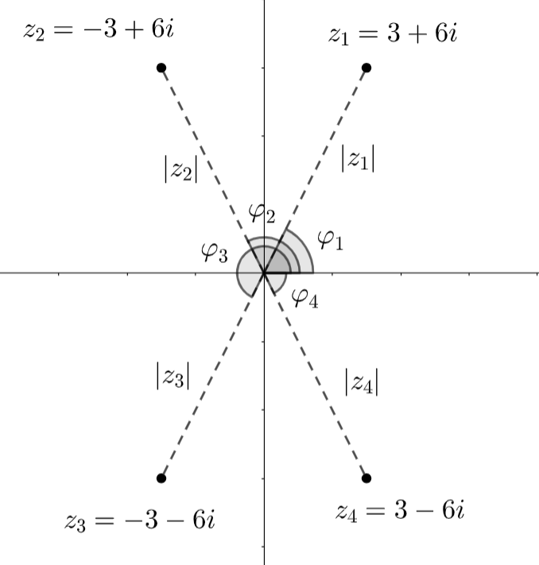

Kompleksilukujen esitysmuotoja
Contents
Kompleksilukujen esitysmuotoja#
Edellisessä luvussa kompleksiluvusta käytettiin summamuotoa \(z=x+yi\) tai \(z=\operatorname{Re}{z}+\operatorname{Im}{z}\). Tämä esitystapa on selkeä, mutta joissakin laskutoimituksissa hieman kömpelö. Opetellaan tässä kaksi muuta esitysmuotoa: kulma- ja eksponenttimuoto.
Kulmamuoto#
Kompleksiluvun summa- ja kulmamuoto ovat keskenään samanlainen vastinpari kuin vektorien komponentti- ja napakoordinaattiesitys. Tässä välissä voit halutessasi kerrata nämä vektorien esitysmuodot.
Kulmamuodossa kompleksiluvusta \(z=x+yi\) esitetään luvun itseisarvo \(|z|=\sqrt{x^2+y^2}\) ja niinsanottu vaihekulma \(\varphi\) muodossa \(z=|z|\angle \varphi\).
Kulma \(\phi\) määrittää suunnan kompleksitasossa reaaliakselin positiivisesta suunnasta vastapäivään. Jos sekä reaali- että imaginaariosa ovat positiivisia, niin vaihekulman saa suoraan laskemalla
\(\varphi=\arctan{\frac{y}{x}}\)
ja muissa tapauksessa kannattaa hahmotella luku kompleksitasoon ja päätellä oikea kulma samalla tavalla kuin vektorien esitysmuodon muunnoksissa. Käytännössä kannattaa laskea sopiva apukulma käyttämällä reaali- ja imaginaariosan kertoimien itseisarvoja. Lopullinen vaihekulma riippuu siitä, missä koordinaatiston neljänneksessä kompleksiluku sijaitsee. Negatiivisia vaihekulman arvoja voidaan myös käyttää, tällöin kulmaa mitataan reaaliakselista myötäpäivään.
Esimerkki
Muunna kulmamuotoon luvut a) \(z_1=3+6i\), b) \(z_2=-3+6i\), c) \(z_3=-3-6i\), \(d) \)z_4=3-6i$.

Ratkaisu
Kaikkien näiden kompleksilukujen itseisarvo on sama:
\(|z_1|=|z_2|=|z_3|=|z_4|=\sqrt{(\pm 3)^2+(\pm 6)^2}=\sqrt{45}\approx 6.71\).
a) Tämän luvun vaihekulma on \(\varphi_1=\arctan{6}{3}=\arctan{2}=63.43^{\circ}\), joten \(z=6.71 \angle 63.43^{\circ}\)
b) Kompleksiluvun ja reaaliakselin negatiivisen puolen väliin jäävä kulma on \(\arctan{6}{3}=\arctan{2}=63.43^{\circ}\). Vaihekulma mitataan reaaliakselin positiiviselta puolelta, joten \(\varphi_2=180^{\circ}-63.43^{\circ}=116.57^{\circ}\). Siis \(z=6.71 \angle 116.57^{\circ}\)
c) Nyt kulma \(63.43^{\circ}\) jää reaaliakselin ja kompleksiluvun väliin, joten vaihekulma saadaan lisäämällä tähän reaaliakselin yläpuolinen oikokulma: \(\varphi_3=180^{\circ}+63.43^{\circ}=243.43^{\circ}\) ja edelleen \(z=6.71 \angle 243.43^{\circ}\)
d) Kulma voidaan nyt helpoiten määritellä negatiivisena: \(\varphi_4=-\arctan{6}{3}=-\arctan{2}=-63.43^{\circ}\), joten \(z=6.71 \angle -63.43^{\circ}\)
Muunnos kulmamuodosta summamuotoon tapahtuu samalla laskutoimituksella kuin vektorien muunnos napakoordinaattimuodosta komponenttimuotoon. Kompleksiluvusta \(z=|z| \angle \varphi\) saadaan summamuotoon \(z=x+yi\) kertoimet \(x=|z| \cos{\varphi}\) ja \(y=|z| \sin{\varphi}\).
Reaalilukujakin voi esittää vaihekulman avulla. Jos luku on positiivinen, se sijoittuu vaaka-akselin positiiviselle puoliskolle eli sen vaihekulma on 0 astetta. Jos luku on negatiivinen, kulman toinen kylki on vaaka-akselin negatiivisella puolella, jolloin kulma on 180 astetta. Vastaavasti puhtaasti imaginaariset kompleksiluvut sijaitsevat koordinaatiston pystyakselilla. Siellä vaihekulma on positiivisilla arvoilla 90 astetta ja negatiivisella arvoilla 270 astetta.
Esimerkki
Muunna summamuotoon kompleksiluvut \(3 \angle 20^{\circ}\), \(6 \angle 160^{\circ}\), \(5\angle 180^{\circ}\) ja \(4 \angle 90^{\circ}\).
Ratkaisu
\(3 \angle 20^{\circ}=3 \cos{20^{\circ}} + 3\sin{20^{\circ}}~i \approx 2.82 + 1.03 i\)
\(6 \angle 160^{\circ}=6 \cos{160^{\circ}} + 6\sin{160^{\circ}}~i \approx -5.64 + 2.05 i\)
\(5 \angle 180^{\circ}=5 \cos{180^{\circ}} + 5\sin{180^{\circ}}~i = -5 + 0i = -5\)
\(4 \angle 90^{\circ}=4 \cos{0^{\circ}} + 4\sin{90^{\circ}}~i = 0 + 4i = 4i\)
Laskutoimitukset kulmamuodossa#
Kompleksilukujen yhteen- ja vähennyslasku on määritelty vain summamuotoisille luvuille. Kulmamuodosta saadaan kuitenkin kerto- ja jakolaskuille sekä kompleksilukujen potenssilaskuille seuraavat kätevät laskumenetelmät.
Oletetaan, että \(z_1=|z_1| \angle \varphi_1\) ja \(z_2=|z_2| \angle \varphi_2\) ja \(n\) on jokin kokonaisluku. Tällöin:
\(z_1 z_2 = |z_1||z_2| \angle (\varphi_1+\varphi_2)\)
\(z_1^n = |z_1|^2 \angle (n \varphi_1)\) (de Moivren kaava)
\(\frac{z_1}{z_2} = \frac{|z_1|}{|z_2|} \angle (\varphi_1-\varphi_2)\)
Esimerkki
Laske luvuilla \(z_1=3 \angle 30^{\circ}\) ja \(z_2=7 \angle 110^{\circ}\) seuraavat laskut:
a) \(z_1 z_2\), b) \(\frac{z_1}{z_2}\), c) \(z_1^5\), d) \(\frac{z_1^3}{z_2^3}\)
Ratkaisu
a) \((3 \angle 30^{\circ}) (7 \angle 110^{\circ}) = 3 \cdot 7 \angle (30^{\circ}+110^{\circ})=21 \angle 140^{\circ}\)
b) \(\frac{(3 \angle 30^{\circ}}{7 \angle 110^{\circ}} = \frac{3}{7} \angle (30^{\circ}-110^{\circ})=\frac{3}{7}\angle -80^{\circ}\)
c) \((3 \angle 30^{\circ})^5 = 3^5 \angle (5\cdot 30^{\circ})=243 \angle 150^{\circ}\)
d) \(\frac{(3 \angle 30^{\circ})^3}{(7 \angle 110^{\circ})^3} = \frac{27 \angle {90^{\circ}}}{343\angle{330}} = \frac{27}{343} \angle -240^{\circ}\)
Lasku onnistuu myös potenssilaskun säännöllä \(\frac{a^3}{b^3}=\left(\frac{a}{b}\right)^3\):
\(\left(\frac{3}{7} \angle(30^{\circ}-110^{\circ}) \right)^3 = \left(\frac{3}{7} \angle(-80^{\circ}) \right)^3 = \frac{27}{343} \angle -240^{\circ}\)
Eksponenttimuoto#
Kompleksilukuja voidaan esittää myös eksponenttimuodossa eli \(e\)-kantaisina potenssilukuina. Tällöin voidaan suorittaa monimutkaisia kompleksilukujen laskutoimituksia käyttämällä yksinkertaisia potenssilukujen laskusääntöjä. Muunnos kulmamuodosta eksponenttimuotoon tapahtuu seuraavasti:
\(z=|z| \angle \varphi \Leftrightarrow z = |z|e^{i \varphi}\)
Laskusääntöjen perustelua
Edellisessä kappaleessa esitetyt kulmamuotoisten potenssilukujen laskusäännöt on mahdollista perustella juuri tällä esitysmuodolla:
\(z_1 z_2 = |z_1| e^{i \varphi_1} \cdot |z_2| e^{i \varphi_2} = |z_1||z_2| e^{i \varphi_1 + i \varphi_2} = |z_1||z_2| e^{i(\varphi_1 +\varphi_2)} = |z_1||z_2| \angle (\varphi_1+\varphi_2)\)
\(z_1^n = \left(|z_1| e^{i \phi_1}\right)^n = |z_1|^n \cdot (e^{i \varphi})^n = |z_1|^n e^{i n \varphi_1} = |z_1|^2 \angle n\varphi\)
\(\frac{z_1}{z_2}=\frac{|z_1| e^{i \varphi_1}}{|z_2| e^{i \varphi_2}}= \frac{|z_1|}{|z_2|} \frac{e^{i \varphi_1}}{e^{i \varphi_2}} = \frac{|z_1|}{|z_2|} e^{i \varphi_1 - i \varphi_2}=\frac{|z_1|}{|z_2|} e^{i(\varphi_1\varphi_2)} = \frac{|z_1|}{|z_2|} \angle (\varphi_1-\varphi_2)\)
Muunnos perustuu 1700-luvulla kehitettyyn Eulerin kaavaan \(e^{i \phi} = \cos{\phi} + i \sin{\phi}\). Eulerin kaava on monikäyttöinen ja myös ihan sellaisenaan matemaattiseen yleissivistykseen kuuluva asia. Ohessa on esitetty eräs perustelu Eulerin kaavalle. Lisää perusteluja sekä kaavan historiaa ja käyttökohteita löytyy englanniksi Wikipediasta.
Eulerin kaavan perustelu
Yhtälö \(\cos{\varphi}+i\sin{\varphi}=e^{i \varphi}\) voidaan kirjoittaa muodossa \(\frac{\cos{\varphi}+i\sin{\varphi}}{e^{i \varphi}}=1\). Yhtälön jälkimmäinen esitysmuoto on saatu jakamalla yhtälön molemmat puolet luvulla \(e^{i \varphi}\). Tämä laskutoimitus on sallittu, sillä lauseke \(e^x\) ei saa arvoa 0 millään arvolla \(x\).
Pyritään todistamaan yhtälön muokattu esitysmuoto oikeaksi. Muodostetaan sitä varten funktio \(f(\varphi)=\frac{\cos{\varphi}+i\sin{\varphi}}{e^{i \varphi}}\) ja kirjoitetaan se muodossa \(f(\varphi)=e^{-i \varphi} (\cos{\varphi}+i\sin{\varphi})\).
Nyt pitäisi osoittaa, että funktio \(f(\varphi)\) saa aina arvon 1. Osoitetaan ensin, että kyseessä on vakiofunktio, eli että sen derivaatta saa aina arvon nolla. Silloinhan funktio saa kaikilla \(\varphi\):n arvoilla saman arvon, ja riittää enää todistaa, että se saa jollakin \(\varphi\):n arvolla arvon 1. Muodostetaan siis derivaatta \(f'(\varphi)\) tulon derivointikaavan sekä eksponenttifunktion, sinin ja kosinin derivaattojen avulla:
\(f'(\varphi)=-ie^{-i \varphi}(\cos{\varphi}+i\sin{\varphi})+ e^{-i\varphi}(-\sin{\varphi}+i \cos{\varphi})\)
\(f'(\varphi)=-ie^{-i \varphi}\cos{\varphi}-i^2 e^{-i \varphi}\sin{\varphi}-e^{-i \varphi}\sin{\varphi}+i e^{-i \varphi}\cos{\varphi}\)
\(f'(\varphi) = -ie^{-i \varphi}\cos{\varphi} + e^{-i \varphi}\sin{\varphi}-e^{-i \varphi}\sin{\varphi}+i e^{-i \varphi}\cos{\varphi}\)
Huomataan, että yhtälön oikean puolen ensimmäinen ja viimeinen termi ovat toistensa vastaluvut, ja samoin kaksi keskimmäistä termiä ovat toistensa vastaluvut. Näin ollen yhtälön oikealle puolelle jää vain nolla, eli kulmasta \(\varphi\) riippumatta \(f'(\varphi) = 0\) ja siten funktio saa aina saman arvon.
Lasketaan nyt funktion arvo esimerkiksi kulman arvolla \(\phi=0\) (radiaania):
\(f(0)=e^{-i \cdot 0} (\cos{0}+i\sin{0}) = 1\cdot (1+0) = 1\)
Näin ollen yhtälö \(\frac{\cos{\varphi}+i\sin{\varphi}}{e^{i \varphi}}=1\) on aina tosi ja siten myös \(\cos{\varphi}+i\sin{\varphi}=e^{i \varphi}\) on aina tosi.